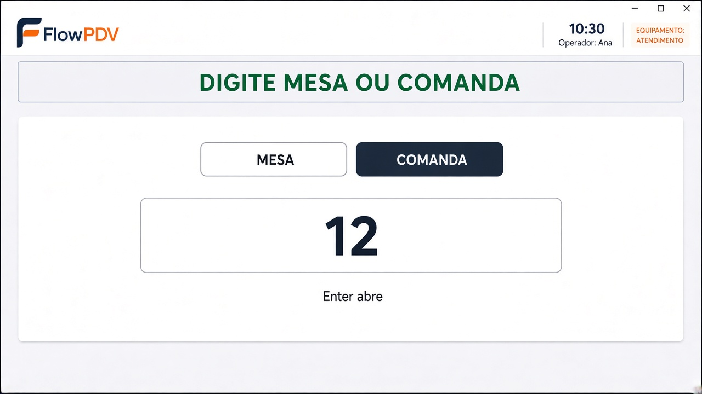
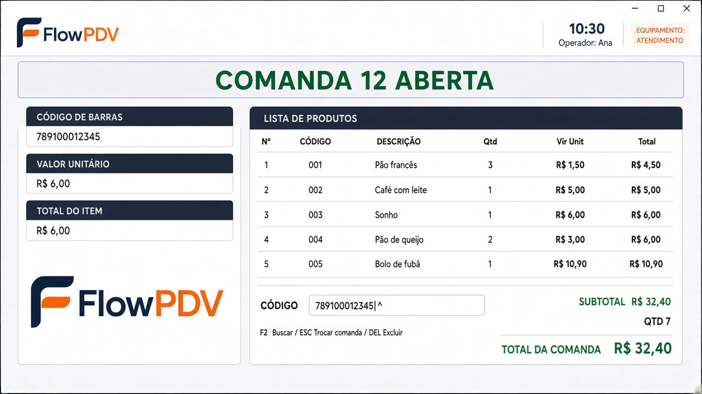

Um layout. Três jeitos de loja. O caixa clássico não muda.
O PC do balcão é um PDV de atendimento: mesma cara do caixa, logo do cliente, sem foto de produto e sem faixa vermelha. O que muda é só o texto — mesa, comanda, ou os dois.
Caixa clássico intactoNovo terminal só se o PC for marcado AtendimentoModerno: nem apagar
Duas camadas (não misturar)
Já existe · da loja
O que a loja vende no salão
Campo moduloComandas, igual hoje na Gestão:
Mesas e comandas · Só mesas · Só comandas · Desativado
Novo · deste PC
O que este computador mostra
Campo tipoTerminal no equipamento:
Caixa (padrão) · Atendimento · Completo (gerente)
Se você ligar “só comandas” na loja, o caixa também perde o PDV. Por isso o terminal novo é por computador: o caixa continua caixa; o PC do salão vira atendimento.
Ajustes do visual (o que você marcou)
Sem faixa vermelha
Usa a barra do caixa clássico: fundo cinza claro, título verde tipo “CAIXA ABERTO”. Aberto = verde. Livre para próxima = o mesmo cinza, texto “DIGITE A MESA / COMANDA”.
Sem foto de produto
Não temos cadastro de foto. No lugar fica o logo do cliente, o mesmo do caixa (lic.logoUrl / fallback FlowPDV).
Código, unitário, total do item
Igual o clássico à esquerda. À direita a lista. Embaixo o leitor. Sem F4 de pagar neste PC.
E as mesas?
Sim, o mesmo layout serve. Mesa 12 e Comanda 12 já são registros diferentes hoje (MESA-12 e CMD-12). O PC de atendimento só pergunta o número; o tipo vem do modo da loja.
Padaria
Só comandas
Sem chips. “DIGITE A COMANDA”. Enter 12 abre CMD-12.
COMANDA 12 ABERTA
Restaurante
Só mesas
Sem chips. “DIGITE A MESA”. Enter 5 abre MESA-5.
MESA 05 ABERTA
Bar / misto
Mesas e comandas
Dois botões no topo: Mesa | Comanda (lembra o último). Aí o número. Assim 12 não mistura mesa com comanda.
MESACOMANDA
Recomendação: um único shell. Só os rótulos mudam. A aba Gestão de Comandas & Mesas do gerente continua com o grid. Este PDV é o atalho de lançar, não substitui a gestão.
Mockups atualizados
Conceito. Clique para ampliar. No app real a faixa de status copia o caixa (cinza + verde), não a faixa escura do desenho.

1. Entrada (loja mista). Escolhe Mesa ou Comanda, digita o número. Loja só-mesa ou só-comanda nem mostra os chips.

2. Lançamento. Logo do cliente à esquerda, lista à direita, leitor embaixo. Sem foto de produto.
Atalhos deste terminal: F2 buscar · DEL excluir · Esc soltar e pedir o próximo número.
Pagamento só no caixa (Gestão → F4), como hoje.
Fluxo
Login operador
→
Tipo (se a loja tiver os dois)
→
Número
→
Lança produto
→
Esc · próxima
Roteiro fácil (o que a gente faz, na ordem)
Pensa em dois computadores: um cobra (já existe) e outro só lança pedido (vamos construir). Cada etapa só avança se o caixa continuar funcionando igual.
Hoje: não mexe no programa.
Só conversa e este HTML. Ninguém na loja percebe nada.
A gente coloca uma plaquinha escondida em cada PC: “este é caixa” ou “este é do salão”.
Ainda ninguém lê a plaquinha. A tela continua a mesma.
Você passa a poder escolher a plaquinha no Master e no gerente.
Marca “salão” e… a tela ainda não muda. É de propósito: prova que o caixa não quebrou.
A gente desenha a tela nova, mas deixa desligada.
Igual o caixa: logo do cliente, lista, leitor. Sem foto de produto, sem faixa vermelha, sem botão de cobrar.
Login ainda abre o caixa de sempre.
Agora sim: o PC marcado “salão” abre a tela nova.
O PC do caixa nem vê isso. Você testa o caixa: vender, F4, leitor — tem que estar igual.
O atendente digita o número e põe produto.
Loja só comanda: pede a comanda. Loja só mesa: pede a mesa. Loja com os dois: escolhe Mesa ou Comanda, depois o número.
O pedido aparece no caixa / na gestão, como já aparece hoje.
Nesse PC não se cobra.
Esc = solta e pede o próximo número. F2 busca produto. Pagar continua no caixa.
Não apaga a outra cara do PDV (a moderna).
Ela já está escondida. Mexer nisso é outro assunto, outro dia.
Não misturar na mesma entrega: tela nova + apagar o moderno + mudar a gestão de mesas. Cozinha e impressão de pedido ficam para depois.